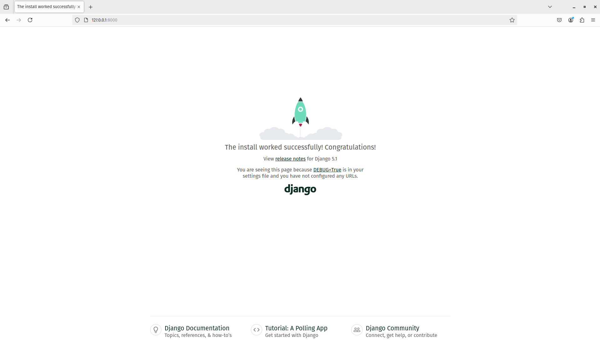

Part of this chapter is based on tutorials by Geek Girls Carrots (https://github.com/ggcarrots/django-carrots).
Parts of this chapter are based on the django-marcador tutorial licensed under the Creative Commons Attribution-ShareAlike 4.0 International License. The django-marcador tutorial is copyrighted by Markus Zapke-Gründemann et al.
We're going to create a small blog!
The first step is to start a new Django project. Basically, this means that we'll run some scripts provided by Django that will create the skeleton of a Django project for us. This is just a bunch of directories and files that we will use later.
The names of some files and directories are very important for Django. You should not rename the files that we are about to create. Moving them to a different place is also not a good idea. Django needs to maintain a certain structure to be able to find important things.
Remember to run everything in the virtualenv. If you don't see a prefix
(myvenv)in your console, you need to activate your virtualenv. We explained how to do that in the Django installation chapter in the Working with virtualenv part. Typingmyvenv\Scripts\activateon Windows orsource myvenv/bin/activateon macOS or Linux will do this for you.
In your macOS or Linux console, you should run the following command. Don't forget to add the period (or dot) . at the end!
command-line
(myvenv) ~/djangogirls$ django-admin startproject mysite .
The period
.is crucial because it tells the script to install Django in your current directory (for which the period.is a short-hand reference).Note When typing the command above, remember that you only type the part which starts by
django-admin. The(myvenv) ~/djangogirls$part shown here is just example of the prompt that will be inviting your input on your command line.
On Windows you should run the following command. (Don't forget to add the period (or dot) . at the end):
command-line
(myvenv) C:\Users\Name\djangogirls> django-admin.exe startproject mysite .
The period
.is crucial because it tells the script to install Django in your current directory (for which the period.is a short-hand reference).Note When typing the command above, remember that you only type the part which starts by
django-admin.exe. The(myvenv) C:\Users\Name\djangogirls>part shown here is just example of the prompt that will be inviting your input on your command line.
django-admin.py is a script that will create the directories and files for you. You should now have a directory structure which looks like this:
djangogirls
├── manage.py
├── mysite
│ ├── asgi.py
│ ├── __init__.py
│ ├── settings.py
│ ├── urls.py
│ └── wsgi.py
├── myvenv
│ └── ...
└── requirements.txt
Note: in your directory structure, you will also see your
myvenvdirectory that we created before.
manage.py is a script that helps with management of the site. With it we will be able (among other things) to start a web server on our computer without installing anything else.
The settings.py file contains the configuration of your website.
Remember when we talked about a mail carrier checking where to deliver a letter? urls.py file contains a list of patterns used by urlresolver.
Let's ignore the other files for now as we won't change them. The only thing to remember is not to delete them by accident!
Let's make some changes in mysite/settings.py. Open the file using the code editor you installed earlier.
Note: Keep in mind that settings.py is a regular file, like any other. You can open it from inside the code editor, using the "File -> Open" menu action. This should get you the usual window in which you can navigate to your settings.py file and select it. Alternatively, you can open the file by navigating to the djangogirls/ folder on your desktop and right-clicking on it. Then, select your code editor from the list. Selecting the editor is important as you might have other programs installed that can open the file but will not let you edit it.
It would be nice to have the correct time on our website. Go to Wikipedia's list of time zones and copy your relevant time zone (TZ) (e.g. Europe/Berlin).
In settings.py, find the line that contains TIME_ZONE and modify it to choose your own timezone. For example:
mysite/settings.py
TIME_ZONE = 'Europe/Berlin'
Note: Timezones should be in the Region/City format, so eg "EDT" is not valid, but "America/Detroit" is.
A language code consist of the language, e.g. en for English or de for German, and the country code, e.g. de for Germany or ch for Switzerland. If English is not your native language, you can add this to change the default buttons and notifications from Django to be in your language. So you would have "Cancel" button translated into the language you defined here. Django comes with a lot of prepared translations.
If you want a different language, change the language code by changing the following line:
mysite/settings.py
LANGUAGE_CODE = 'de-ch'
We'll also need to add a path for static files.
(We'll find out all about static files and CSS later in the tutorial.)
Go down to the end of the file,
and just underneath the STATIC_URL entry, add a new one called STATIC_ROOT:
mysite/settings.py
STATIC_URL = 'static/'
STATIC_ROOT = BASE_DIR / 'static'
When DEBUG is True and ALLOWED_HOSTS is empty, the host is validated against ['localhost', '127.0.0.1', '[::1]'].
This won't match our hostname on PythonAnywhere once we deploy our application so we will change the following setting:
mysite/settings.py
ALLOWED_HOSTS = ['localhost', '127.0.0.1', '.pythonanywhere.com']
Note: If you're using a Chromebook, add this line at the bottom of your settings.py file:
MESSAGE_STORAGE = 'django.contrib.messages.storage.session.SessionStorage'Also add
.amazonaws.comto theALLOWED_HOSTSif you are using cloud9If you are hosting your project on
Glitch.com, let us protect the Django secret key that needs to remain confidential (otherwise, anyone remixing your project could see it):
First, we are going to create a random secret key. Open the Glitch terminal again, and type the following command:
command-line
python -c 'from django.core.management.utils import get_random_secret_key; \ print(get_random_secret_key())'This should display a long random string, perfect to use as a secret key for your brand new Django web site. We will now paste this key into a
.envfile that Glitch will only show you if you are the owner of the web site.Create a file
.envat the root of your project and add the following property in it:.env
# Here, inside the single quotes, you can cut and paste the random key generated above SECRET='3!0k#7ds5mp^-x$lqs2%le6v97h#@xopab&oj5y7d=hxe511jl'Then update the Django settings file to inject this secret value and set the Django web site name:
mysite/settings.py
import os SECRET_KEY = os.getenv('SECRET')And a little further down in the same file, we inject the name of your new Glitch website:
mysite/settings.py
ALLOWED_HOSTS = [os.getenv('PROJECT_DOMAIN') + ".glitch.me"]The
PROJECT_DOMAINvalue is automatically generated by Glitch. It will correspond to the name of your project.
There's a lot of different database software that can store data for your site. We'll use the default one, sqlite3.
This is already set up in this part of your mysite/settings.py file:
mysite/settings.py
DATABASES = {
'default': {
'ENGINE': 'django.db.backends.sqlite3',
'NAME': BASE_DIR / 'db.sqlite3',
}
}
To create a database for our blog, let's run the following in the console: python manage.py migrate (we need to be in the djangogirls directory that contains the manage.py file). If that goes well, you should see something like this:
command-line
(myvenv) ~/djangogirls$ python manage.py migrate
Operations to perform:
Apply all migrations: admin, auth, contenttypes, sessions
Running migrations:
Applying contenttypes.0001_initial... OK
Applying auth.0001_initial... OK
Applying admin.0001_initial... OK
Applying admin.0002_logentry_remove_auto_add... OK
Applying admin.0003_logentry_add_action_flag_choices... OK
Applying contenttypes.0002_remove_content_type_name... OK
Applying auth.0002_alter_permission_name_max_length... OK
Applying auth.0003_alter_user_email_max_length... OK
Applying auth.0004_alter_user_username_opts... OK
Applying auth.0005_alter_user_last_login_null... OK
Applying auth.0006_require_contenttypes_0002... OK
Applying auth.0007_alter_validators_add_error_messages... OK
Applying auth.0008_alter_user_username_max_length... OK
Applying auth.0009_alter_user_last_name_max_length... OK
Applying auth.0010_alter_group_name_max_length... OK
Applying auth.0011_update_proxy_permissions... OK
Applying auth.0012_alter_user_first_name_max_length... OK
Applying sessions.0001_initial... OK
And we're done! Time to start the web server and see if our website is working!
You need to be in the directory that contains the manage.py file (the djangogirls directory). In the console, we can start the web server by running python manage.py runserver:
command-line
(myvenv) ~/djangogirls$ python manage.py runserver
If you are on a Chromebook, use this command instead:
Cloud 9
(myvenv) ~/djangogirls$ python manage.py runserver 0.0.0.0:8080
or this one if you are using Glitch:
Glitch.com terminal
$ refresh
If you are on Windows and this fails with UnicodeDecodeError, use this command instead:
command-line
(myvenv) ~/djangogirls$ python manage.py runserver 0:8000
Now you need to check that your website is running. Open your browser (Firefox, Chrome, Safari, Internet Explorer or whatever you use) and enter this address:
browser
http://127.0.0.1:8000/
If you're using a Chromebook and Cloud9, instead click the URL in the pop-up window that should have appeared in the upper right corner of the command window where the web server is running. The URL will look something like:
browser
https://<a bunch of letters and numbers>.vfs.cloud9.us-west-2.amazonaws.com
or on Glitch:
https://name-of-your-glitch-project.glitch.me
You can open this in another browser window and you should see the Django install worked page.
Congratulations! You've just created your first website and run it using a web server! Isn't that awesome?

Note that a command window can only run one thing at a time, and the command window you opened earlier is running the web server. As long as the web server is running and waiting for additional incoming requests, the terminal will accept new text but will not execute new commands.
We reviewed how web servers work in the How the Internet works chapter.
To type additional commands while the web server is running, open a new terminal window and activate your virtualenv -- to review instructions on how to open a second terminal window, see Introduction to the command line. To stop the web server, switch back to the window in which it's running and press CTRL+C - Control and C keys together (on Windows, you might have to press Ctrl+Break).
Ready for the next step? It's time to create some content!